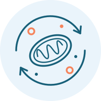

StoffwechselgesundheitWie der Körper Energie nutzt
Entdecken Sie die Stoffwechselveränderungen, die mit Nierenerkrankungen einhergehen, und die Ernährungsstrategien, die zu ihrer Behandlung untersucht werden.
Schwerpunkt: zelluläre Energie und Stoffwechselwege